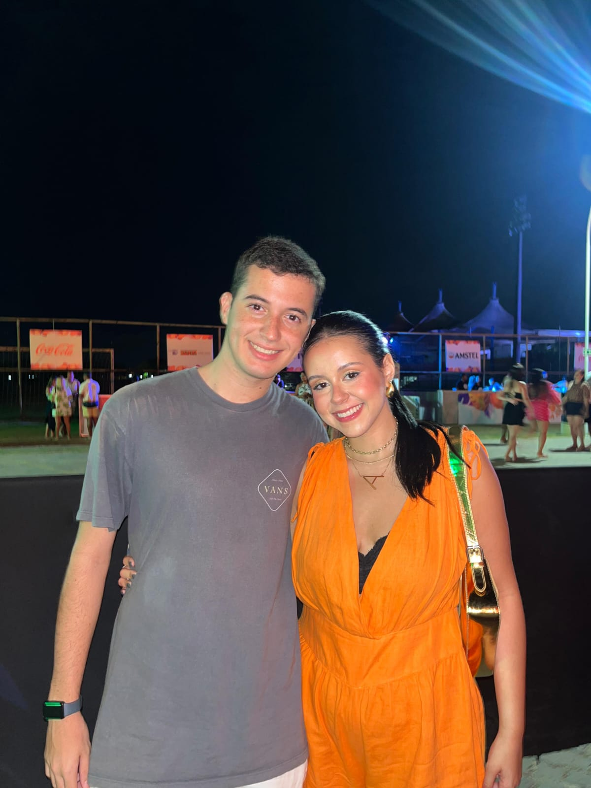

Uma história nossa
Bruno
&
Ana Beatriz
desde 08 de dezembro de 2024
—
dias
—
meses
—
horas juntos
Nossa história
Primeiro Date
O nervosismo que a gente disfarça com sorriso. O momento em que percebemos que queria mais daquilo.
Primeira Viagem
Descobrir que viajar ao lado de alguém é diferente de qualquer lugar que você já foi sozinho.
Primeira Ida ao Estádio
Entre a torcida e o barulho, olhei pro lado e percebi que o melhor do dia era você estar lá.
Memória Especial
Tem momentos que a gente não planeja e que ficam pra sempre. Esse foi um deles.
Nossa Foto
Uma imagem que guardo não só no celular, mas na memória — do jeito que você estava, do jeito que eu me senti.
Juntos
No fim, não é sobre os lugares ou as datas. É sobre ter você do lado — e querer continuar assim.
Memórias



Para você
Ana Beatriz,
Tem certas pessoas que chegam na nossa vida e mudam silenciosamente a forma como enxergamos tudo. Você foi assim — sem aviso, sem pressa, com a leveza de quem não precisa de palco pra brilhar.
Cada momento ao seu lado virou uma memória que eu escolho guardar. O jeito que você ri, a forma como faz até o ordinário parecer especial, a paz que me passa só de estar perto.
Não tenho palavras grandes o suficiente. Só sei que, de 08 de dezembro pra cá, até os dias comuns ficaram melhores.
— Bruno